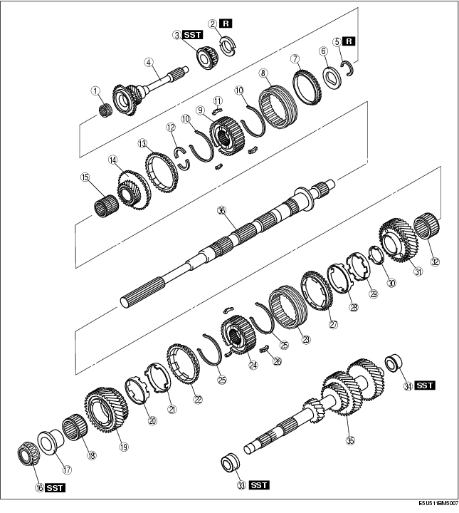
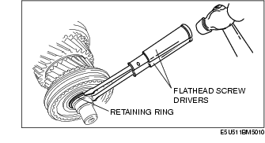
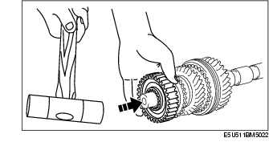
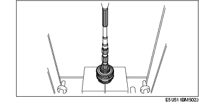
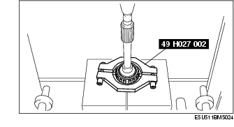
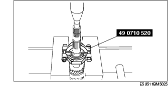
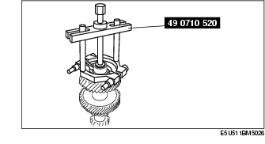

P66M-D [MT WM] ➭ TRANSMISSION/TRANSAXLE ➭ MANUAL TRANSMISSION ➭ 1ST/2ND GEAR COMPONENT, 5TH/6TH GEAR COMPONENT AND COUNTERSHAFT DISASSEMBLY
1ST/2ND GEAR COMPONENT, 5TH/6TH GEAR COMPONENT AND COUNTERSHAFT DISASSEMBLY
D5E051117030M03
• Remove the countershaft center bearing race only if there is a malfunction.

|
Maindrive gear shaft bearing (See Maindrive Gear Shaft Bearing Disassembly Note.) |
|
|
Retaining ring (See 5th/6th Clutch Hub Component Disassembly Note.) |
|
|
5th/6th clutch hub (See 5th/6th Clutch Hub Component Disassembly Note.) |
|
|
Mainshaft center bearing (See 1st/2nd Clutch Hub Component Disassembly Note.) |
|
|
1st/2nd clutch hub (See 1st/2nd Clutch Hub Component Disassembly Note.) |
|
|
Countershaft center bearing race (See Countershaft Center Bearing Race Disassembly Note.) |
|
|
Countershaft front bearing race (See Countershaft Front Bearing Race Disassembly Note.) |
|
5th/6th Clutch Hub Component Disassembly Note

• Do not reuse the retaining ring.
- Supporting the 5th/6th clutch hub with your hand as shown in the figure, tap the mainshaft with a plastic hammer to remove the 5th/6th clutch hub.

1st/2nd Clutch Hub Component Disassembly Note
- Using a press, remove the mainshaft center bearing, 1st gear, 1st synchronizer ring component, 1st/2nd clutch hub component, 2nd synchronizer ring component and 2nd gear at the same time.

• Be sure to support the mainshaft component so that it does not fall.
Maindrive Gear Shaft Bearing Disassembly Note

Countershaft Center Bearing Race Disassembly Note

• Be sure to support the countershaft so that it does not fall.
Countershaft Front Bearing Race Disassembly Note
